건설안전산업기사 (2010-05-09 기출문제)
1과목: 산업안전관리론
1. 연간 상시근로자가 100명인 화학공장에서 1년 동안 8명이 부상당하는 재해가 발생하여 휴업일수 219일의 손실이 발생하였다면 총근로손실일수와 강도율은 얼마인가?(단, 근로자는 1일 8시간씩 연간 300일을 근무하였다.)(오류 신고가 접수된 문제입니다. 반드시 정답과 해설을 확인하시기 바랍니다.)
- 총근로손실일수 : 160일, 강도율 : 0.91
- 총근로손실일수 : 170일, 강도율 : 0.81
- 총근로손실일수 : 180일, 강도율 : 0.75
- 총근로손실일수 : 219일, 강도율 : 0.91
(정답률: 36%)

2. 한 지점에 주의를 집중하면 다른 곳의 주의가 약해지는 것은 주의의 특징 중 무엇에 해당하는가?
- 선택성
- 방향성
- 단속성
- 변동성
(정답률: 39%)
3. 다음과 같은 착시(錯視)현상에 해당하는 것은?
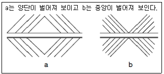
- muller-Layer의 착시
- Helmholz의 착시
- Hering의 착시
- Poggendorf의 착시
(정답률: 43%)
4. 교육방법 중 강의법(Lecture)의 장점으로 볼 수 없는 것은?
- 강사의 입장에서 시간의 조정이 가능하다.
- 참가자는 긍정적이며, 능동적 입장에 놓인다.
- 전체적인 교육내용을 제시하는데 유리하다.
- 비교적 많은 인원을 대상으로 단시간에 지식을 부여할 수 있다.
(정답률: 58%)
5. 다음 중 재해예방의 4원칙에 해당하지 않는 것은?
- 손실 추정의 원칙
- 대책 선정의 원칙
- 예방 가능의 원칙
- 원인 계기의 원칙
(정답률: 74%)
6. 위험예지훈련 4R(라운드)의 진행방법에서 3R(라운드)에 해당하는 것은?
- 목표설정
- 본질추구
- 현상파악
- 대책수립
(정답률: 68%)
7. 재해 손실비 중 직접 손실비에 해당하지 않는 것은?
- 요양급여
- 휴업급여
- 간병급여
- 생산손실
(정답률: 63%)
8. 다음 중 재해 발생시 가장 먼저 해야 할 일은?
- 현장보존
- 상급 부서의 보고
- 재해자의 구조 및 응급조치
- 2차 재해의 방지
(정답률: 73%)
9. 산업안전보건법상 안전ㆍ보건표지 중 경고표지의 종류에 해당하지 않는 것은?
- 고압전기 경고
- 레이저광선 경고
- 추락경고
- 몸균형상실 경고
(정답률: 31%)
10. 다음 중 안전점검의 목적에 관한 설명으로 적절하지 않은 것은?
- 기기 및 설비의 결함이나 불안전한 상태의 제거로 사전에 안전성을 확보하기 위함이다.
- 기기 및 설비의 안전상태 유지 및 본래의 성능을 유지하기 위함이다.
- 재해 방지를 위하여 그 재해 요인의 대책과 실시를 계획적으로 하기 위함이다.
- 현장에서 불필요한 시설을 중단시켜 전체의 가동율을 높이기 위함이다.
(정답률: 67%)
11. 다음 중 하버드 학파의 학습지도법 5단계에 해당하지않는 것은?
- 준비
- 평가
- 연합
- 응용
(정답률: 54%)
12. 안전교육 훈련기법에 있어 지식형성 측면에서 가장 적합한 기본교육 훈련방식은?(오류 신고가 접수된 문제입니다. 반드시 정답과 해설을 확인하시기 바랍니다.)
- 실습방식
- 제시방식
- 참가방식
- 시뮬레이션방식
(정답률: 33%)
13. 산업안전보건법상 유해 또는 위험한 작업에 근로자를 사용할 때 실시하는 특별 교육 중 안전에 관한 교육을 실시하는 업무를 가진 사람은?
- 명예산업안전감독관
- 사업주
- 보건관리자
- 관리감독자
(정답률: 61%)
14. 산업안전보건법상 안전보건관리규정에 포함되어야 할 내용이 아닌 것은?
- 안전ㆍ보건교육에 관한 사항
- 작업장 안전관리에 관한 사항
- 사고 조사 및 대책 수립에 관한 사항
- 보호구 안전인증에 관한 사항
(정답률: 51%)
15. 집단에 있어서의 인간관계를 하나의 단면에서 포착하였을 때 이러한 단면적인 인간관계가 생기는 기제와 가장 거리가 먼 것은?
- 모방
- 습성
- 동일화
- 커뮤니케이션
(정답률: 34%)
16. 다음 중 매슬로우(Maslow)가 제창한 인간의 욕구 5단계 이론을 올바르게 나열한 것은?
- 생리적욕구→안전욕구→사회적욕구→존경의 욕구→ 자아실현의 욕구
- 안전욕구→생리적욕구→사회적욕구→존경의 욕구→ 자아실현의 욕구
- 사회적욕구→생리적욕구→안전욕구→존경의 욕구→ 자아실현의 욕구
- 사회적욕구→안전욕구→생리적욕구→존경의 욕구→ 자아실현의 욕구
(정답률: 69%)
17. 다음 중 재해발생에 관한 아담스(Edward adams)의 이론으로 옳은 것은?
- 통제부족→기본적원인→직접적원인→사고→상해
- 관리구조→작전적에러→전술적에러→사고→상해ㆍ손해
- 사회적 환경 및 유전적 요소→개인적 결함→불안전한 행동 및 상태→사고→상해
- 개인ㆍ환경적 요인→불안전 행동 및 상태→에너지 및 위험물의 예기치 못한 폭주→사고→구호
(정답률: 47%)
18. 다음 중 교육의 주체(subject of education)에 해당하는 것은?
- 강사
- 수강자
- 교재
- 교육방법
(정답률: 67%)
19. 내전압용절연장갑의 성능기준에 있어 최대사용전압에 따른 등급 구분에서 최소등급인 “00등급”의 색상으로 옳은 것은?
- 갈색
- 흰색
- 노란색
- 녹색
(정답률: 63%)
20. 다음 중 리더십의 특성이 아닌 것은?
- 밑으로부터의 동의에 의한 권한 부여
- 개인적 영향에 의한 부하와의 관계 유지
- 부하와의 넓은 사회적 간격
- 민주주의적 지휘 형태
(정답률: 66%)
2과목: 인간공학 및 시스템안전공학
21. 다음 중 음(音)의 크기를 나타내는 단위로만 나열된 것은?
- dB, Lux
- phon, lb
- phon, dB
- dB, psi
(정답률: 64%)
22. 하나의 특정한 자극만이 발생할 수 있을 때 반응에 걸리는 시간을 단순반응시간 이라 하는데 흔히 실험에서와 같이 자극을 예상하고 있을 때 전형적으로 반응시간은 약 어느 정도인가?
- 0.15 ~ 0.2초
- 0.5 ~ 1초
- 1.5 ~ 2초
- 2.5 ~ 3초
(정답률: 33%)
23. 고열 작업환경에서 심한 근육 작업 후에 근육의 수축이 격렬하게 일어나며, 탈수와 체내 염분농도 부족에 의해 야기되는 장해는?
- 열경련(heat cramp)
- 열사병(heat stroke)
- 열쇠약(heat prostration)
- 열피로(heat exhaustion)
(정답률: 57%)
24. 시스템의 평가척도 중 시스템의 목표를 잘 반영하는가를 나타내는 척도를 무엇이라 하는가?
- 신뢰성
- 타당성
- 측정의 민감도
- 무오염성
(정답률: 51%)
25. 작업 영역을 설계할 때 조정 가능성의 대상에 해당하지않는 것은?
- 작업대의 조정 가능성
- 작업공구의 조정 가능성
- 작업대상물의 조정 가능성
- 작업대와 관련된 작업자 자세의 조정 가능성
(정답률: 50%)
26. 공간이나 제품의 설계시 움직이는 몸의 자세를 고려하기 위해 사용되는 인체치수는?
- 비례적 인체치수
- 구조적 인체치수
- 기능적 인체치수
- 해부적 인체치수
(정답률: 57%)
27. 인간-기계 시스템의 신뢰도에 영향을 미치는 인간 실수 확률을 예측하는 기법은?
- PHA
- MORT
- THERP
- MTBHE
(정답률: 63%)
28. [그림]에서 A는 자극의 불확실성, B는 반응의 불확실성을 나타낼 때 C 부분에 해당하는 것은?
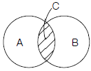
- 전달된 정보량
- 불안전한 행동량
- 자극과 반응의 확실성
- 자극과 반응의 검출성
(정답률: 42%)
29. [그림]과 같은 FT도의 컷셋(cut set)으로 옳은 것은?
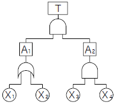
- {X1, X2, X3} {X2, X3, X4}
- {X1, X3, X4} {X2, X3, X4}
- {X1, X2, X3} {X1, X3, X4}
- {X2, X3, X4} {X1, X2}
(정답률: 54%)
30. 시야는 색상에 따라 그 범위가 달라지는데 다음 중 시야의 범위가 가장 넓은 색상은?
- 백색
- 청색
- 적색
- 녹색
(정답률: 54%)
31. 다음 중 FTA에서 어떤 고장이나 실수를 일으키지 않으면 정상사상은 일어나지 않는다고 하는 것으로 시스템의 신뢰성을 표시하는 것은?
- cut set
- minimal cut set
- free event
- minimal path set
(정답률: 58%)
32. 위험조정을 위한 필요한 기술은 조직형태에 따라 다양 하며 4가지로 분류하였을 때 이에 속하지 않는 것은?
- 보류(retention)
- 위험감축(reduction)
- 전가(transfer)
- 계속(continuation)
(정답률: 53%)
33. FT도에 사용되는 기호 중 “결함사상”을 나타내는 기호는?
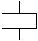
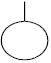
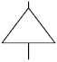
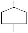
(정답률: 63%)
34. 다음 중 표시장치의 선택에 있어 시각적 표시장치보다 청각적 표시장치를 사용하여야 유리한 경우는?
- 메시지가 복잡한 경우
- 메시지가 즉각적인 행동을 요구하는 경우
- 직무상 수신자가 한 곳에 머무르는 경우
- 메시지가 후에 재참조되는 경우
(정답률: 68%)
35. 프레스 공장에서 모든 방향으로 빛을 발하는 점광원에서 2m 떨어진 곳의 조도가 500Lux 였다면, 4m 떨어진 곳에서의 조도는 몇 Lux 인가?
- 50
- 100
- 125
- 250
(정답률: 58%)
36. 다음 중 기계가 인간을 능가하는 경우가 아닌 경우는?
- 물리적인 양을 신속하게 계수하거나 측정한다.
- 완전히 새로운 해결책을 찾아낸다.
- 암호화된 정보를 신속하게 대량으로 보관한다.
- 반복적인 작업을 신뢰성 있게 수행한다.
(정답률: 73%)
37. 다음 중 설비의 가용도를 나타내는 공식으로 옳은 것은?
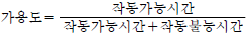
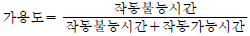
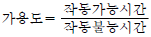
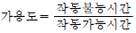
(정답률: 46%)
38. 반경 7cm의 조종구를 45° 움직일 때 계기판의 표시가 3cm 이동하였다. 이 조종장치의 C/R비는 약 얼마인가?
- 1.99
- 1.83
- 1.45
- 1.00
(정답률: 50%)
39. 다음 중 시스템 안전을 위한 업무의 수행 요건이 아닌것은?
- 안전활동의 계획 및 관리
- 시스템 안전에 필요한 사항의 동일성 식별
- 시스템 안전에 대한 프로그램 해석 및 평가
- 나쁜 시스템 프로그램과 분리 및 배제
(정답률: 50%)
40. Chapanis는 위험분석에 있어서 위험의 확률수준과 그에 따른 위험발생률을 정의했으며, 이에 대한 위험분석 내용으로 옳은 것은?
- 전혀 발생하지 않는(impossible) > 10-8/day
- 거의 발생하지 않는(remote) > 10-6/day
- 가끔 발생하는(occasional) > 10-5/day
- 자주 발생하는(frequent) > 10-3/day
(정답률: 50%)
3과목: 건설시공학
41. 혼화재료에 관한 다음 설명 중 옳지 않은 것은?
- AE제는 콘크리트의 워커빌리티를 향상시키는데 사용된다.
- 지연제는 서중콘크리트의 발열 억제나 콜드조인트의 방지에 유효하다.
- 실리카흄은 고강도콘크리트의 제조에 사용된다.
- 플라이애시는 콘크리트의 초기강도 증진에 사용된다.
(정답률: 52%)
42. 철골 내화피복공사 중 멤브레인 공법에 사용되는 재료는?
- 경량콘크리트
- 철망 모르타르
- 뿜칠 플라스터
- 암면 흡음판
(정답률: 56%)
43. 흙파기 공법의 종류와 그에 대한 설명으로 옳지 않은 것은?
- 어스앵커공법 - 흙막이 후면에 구멍을 뚫고 로드(rod)를 앵커시켜 흙막이와 연결시키는 공법이다.
- 역타공법 - 지하ㆍ지상 병행 작업이 가능하므로 공기 단축도 가능하다.
- 트렌치컷공법 - 별도의 흙막이 벽이 필요하지 않다.
- 아일랜드공법 - 대지 중앙부에 기초 구조물을 먼저 축조한다.
(정답률: 48%)
44. 다음 중 철골작업에서 사용되는 철골세우기용 기계는 어느 것인가?
- 진폴(gin pole)
- 크램셸(clam shell)
- 파워쇼벨(power shovel)
- 스크레이퍼(scraper)
(정답률: 76%)
45. 철근이음공법 중 지름이 큰 철근을 이음할 경우 철근의 재료를 절감하기 위하여 활용하는 공법이 아닌 것은?
- 가스압접이음
- 맞댄용접이음
- 나사식커플링이음
- 겹친이음
(정답률: 71%)
46. 거푸집 공법에서 타워크레인 등의 시공장비에 의해 한번에 설치하고 탈형만 하므로 사용할 때마다 부재의 조립 및 분해를 반복하지 않아, 평면상 상하부 동일단면의 벽식 구조인 아파트 건축물에 적용효과가 큰 대형 벽체거푸집은?
- 갱 폼(gang form)
- 클라이밍 폼(climbing form)
- 트레블링 폼(traveling form)
- 슬라이딩 폼(sliding form)
(정답률: 67%)
47. 철근콘크리트 보강 블록공사에 대한 설명 중 옳지 않은 것은?
- 보강근이 들어간 부분은 블록 2단마다 콘크리트나 모르타르를 충분히 충전시켜 철근이 녹스는 것을 방지한다.
- 블록 쌓기 시 되도록 고저차가 없도록 수평이 되게 쌓아 올린다.
- 벽의 세로근은 원칙적으로 이음을 만들지 않고 기초의 테두리보에 정착시킨다.
- 블록의 빈속을 철근과 콘크리트로 보강하여 장막벽을 구성하는 것이다.
(정답률: 53%)
48. 점토질 지반에서 지반개량의 목적과 거리가 먼 것은?
- 연약지반 강화
- 예민비 개선
- 부등침하 방지
- 지반의 지지력 증대
(정답률: 79%)
49. 발주자는 시공자에게 시공을 위임하고 실제로 시공에 소요된 비용, 즉 공사실비(cost)와 미리 정해 놓은 보수(fee)를 시공자가 받는 방식으로 발주자, 컨설턴트 또는 엔지니어 및 시공자 3자가 협의하여 공사비를 결정하는 도급 계약 방식은?
- 실비정산 보수가산계약
- 공동도급 계약방식
- 파트너링 방식
- 분할 도급계약방식
(정답률: 63%)
50. 입찰의 절차에 있어 입찰공고에 포함되는 주요항목이 아닌 것은?
- 계약에 관한 분쟁의 해결방법
- 입찰의 일시와 장소
- 개략적인 공사의 특성, 유형 및 규모
- 발주자와 설계자의 명칭과 주소
(정답률: 66%)
51. 흙을 이김에 의해서 약해지는 정도를 나타내는 흙의 성질은?
- 간극비
- 함수비
- 예민비
- 전단강도
(정답률: 75%)
52. 다음 중 흙막이 벽의 강성이 가장 강한 공법은?
- 슬러리 월(slurry wall)
- 엄지말뚝 + 토류판공법
- CIP 공법(Cast in Place Pile)
- 널말뚝 공법(sheet pile)
(정답률: 58%)
53. 도급계약 방식 중 주문받은 건설업자가 대상계획의 기업, 금융, 토지조달, 설계, 시공 기계기구 설치 등 주문자가 필요로 하는 모든 것을 조달하여 주문자에게 인도하는 도급 계약 방식은?
- 공동도급
- 실비정산 보수가산도급
- 턴키도급
- 일식도급
(정답률: 80%)
54. 다음 중 수평규준틀을 설치하는 목적에 해당하는 것은?
- 건축물의 기초비 너비 또는 길이 등을 표시
- 도로경계의 확정
- 신축할 건축물의 높이의 기준
- 창문틀 위치의 정확성 확인
(정답률: 60%)
55. 콘크리트 타설 시 다짐에 대한 설명으로 옳지 않은 것은?
- 내부진동기는 슬럼프가 15cm 이하일 때 사용하는 것이 좋다.
- 슬럼프가 클수록 오래 다지도록 한다.
- 슬럼프가 작으면 공기량의 손실은 작다.
- 콘크리트 다짐시 철근에 진동을 주지 않는다.
(정답률: 58%)
56. 다음 중 용접불량을 나타내는 용어가 아닌 것은?
- 블로홀(blow hole)
- 오버랩(over lap)
- 엔드탭(end tap)
- 언더컷(under cut)
(정답률: 75%)
57. 기존 건물의 기초나 지정을 보강하거나, 거기에 새로운 기초를 삽입하거나 또는 지지면을 더 깊은 지반에 옮겨 안전하게 하기 위한 공법은?
- 언더피닝공법
- 그라우팅공법
- 탑다운공법
- 콤포저공법
(정답률: 67%)
58. 콘크리트의 중심온도를 10~20℃ 정도로 낮출 수 있기 때문에 단면이 큰 초고층 건축물 등에 많이 사용되고, 초유 등 콘크리트의 제조에도 유리하다고 알려진 시멘트는?
- 조강포틀랜드 시멘트
- 보통포틀랜드 시멘트
- 저발열포틀랜드 시멘트
- 백색포틀랜드 시멘트
(정답률: 58%)
59. 점토지반에 모래를 깔고 그 위에 성토에 의해 하중을 가하면 장기간에 걸쳐 점토 중의 물이 샌드파일을 통하여 지상에 배수되어 지반을 압밀ㆍ강화시키는 공법은?
- 샌드드레인 공법
- 바이브로플로테이션 공법
- 웰포인트 공법
- 그라우팅 공법
(정답률: 76%)
60. 철근 콘크리트 공사에서 콘크리트 타설 후 거푸집 존치 기간을 가장 길게 해야 할 부재는?
- 기둥
- 슬래브 밑
- 기초
- 벽
(정답률: 77%)
4과목: 건설재료학
61. 다음 중 블로운아스팔트에 내열성ㆍ내한성ㆍ내후성 등을 개량하기 위하여 동물섬유나 식물섬유를 혼합하여 유동성을 부여한 것은?
- 스트레이트 아스팔트(straight asphalt)
- 아스팔트 프라이머(asphalt primer)
- 아스팔트 컴파운드(asphalt compound)
- 아스팔타이트(asphaltite)
(정답률: 49%)
62. 대리석에 관한 설명 중 옳지 않은 것은?
- 산과 열에 강하며 외장용으로 주로 사용된다.
- 주성분은 탄산석회이다.
- 내화성이 낮고 풍화되기 쉽다.
- 변성암에 속한다.
(정답률: 77%)
63. 굳지 않은 콘크리트의 성질을 나타내는 용어로서, 콘크리트 타설 작업의 난이도 정도 및 재료의 분리에 저항하는 정도를 나타내는 것은?
- 워커빌리티(workability)
- 컨시스턴시(consistency)
- 플라스티시티(plasticity)
- 펌퍼빌리티(pumpability)
(정답률: 77%)
64. 다음 중 방청도료와 가장 거리가 먼 것은?
- 광명단 도료
- 규산염 도료
- 오일서페이서
- 징크로메이트 도료
(정답률: 56%)
65. 합성수지 중 열경화성 수지가 아닌 것은?
- 페놀수지
- 요소수지
- 에폭시수지
- 아크릴수지
(정답률: 54%)
66. 유리섬유보강 콘크리트(GFRC)의 설명으로 옳지 않은 것은?
- 고강도 이기 때문에 경량화가 가능하다.
- 시멘트모르타르 또는 시멘트 페이스트 보강재료 내알칼리성 유리섬유를 넣어 만든다.
- 유리섬유의 혼입율은 10 ~ 20% 정도이다.
- 패널은 마감을 겸한 반영구적 거푸집으로도 사용될 수 있다.
(정답률: 41%)
67. 다음 중 크롬ㆍ니켈 등을 함유하여 탄소량이 적고 내식성이 우수한 재료는?
- 스테인리스강
- 순철
- 주철
- 강철
(정답률: 76%)
68. 매스콘크리트의 타설 및 양생에 대한 설명 중 옳은 것은?
- 외기온이 영하로 내려가도 자체의 수화열만으로 충분히 양생 가능하므로 별도의 양생조치가 불필요하다.
- 내부 수화열에 의한 콘크리트의 온도 상승 및 하강시 온도응력으로 인한 균열발생 가능성이 있다.
- 부재의 단면크기가 작기 때문에 건조수축에 의한 균열 발생 가능성이 가장 크다.
- 매트기초의 경우 수화발열량이 커서 콘크리트 온도가 높으므로, 표면온도를 낮추기 위한 방안이 필요하다.
(정답률: 45%)
69. 시멘트의 분말도가 높을수록 생기는 특성이 아닌 것은?
- 수화 작용이 빠르고 수밀성이 크다.
- 균열 발생도가 낮다.
- 블리딩이 적어진다.
- 초기 강도의 발생이 빠르며 강도증진율이 높다.
(정답률: 58%)
70. 접착제 중 모든 면에서 가장 우수한 것으로 금속, 플라스틱, 콘크리트 등의 접착제로 쓰이는 것은?
- 에폭시수지 접착제
- 페놀수지 접착제
- 멜라민수지 접착제
- 요소수지 접착제
(정답률: 74%)
71. 다음 금속 중 이온화 경향이 가장 큰 것은?
- 아연
- 알루미늄
- 철
- 납
(정답률: 38%)
72. 내화벽돌은 최소 얼마 이상의 내화도를 가져야 하는가?
- SK 10 이상
- SK 15 이상
- SK 21 이상
- SK 26 이상
(정답률: 61%)
73. 목재의 무늬나 바탕의 특징을 잘 나타낼 수 있는 마무리 도료는?
- 유성페인트
- 수성페인트
- 에나멜 래커
- 클리어 래커
(정답률: 65%)
74. 다음 목재의 함수율 중 압축강도가 가장 높은 것은?
- 10%
- 15%
- 20%
- 30%
(정답률: 45%)
75. 미장작업시 코너비드(coner bead)는 주로 어디에 사용되는가?
- 천장
- 거푸집
- 계단 디딤판
- 기둥의 모서리
(정답률: 83%)
76. 어떤 석재의 질량이 다음과 같을 때 이 석재의 표면건조 포화상태의 비중은?
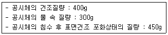
- 1.33
- 1.50
- 2.67
- 4.51
(정답률: 58%)
77. 목재의 수용성 방부제 중 방부효과는 좋으나 목질부를 약화시켜 전기전도율이 증가되고 비내구성인 것은?
- 황산동 1% 용액
- 염화아연 4% 용액
- 크레오소트 오일
- 염화 제2수은 1% 용액
(정답률: 58%)
78. 골재의 함수상태에 대한 다음 식 중 옳지 않은 것은?
- 흡수량 = (표면건조상태의 중량) - (절대건조상태의 중량)
- 유효흡수량 = (표면건조상태의 중량) - (기건상태의 중량)
- 표면수량 = (습윤상태의 중량) - (표면건조상태의 중량)
- 전체함수량 = (습윤상태의 중량) - (기건상태의 중량)
(정답률: 47%)
79. 돌로마이트 플라스터에 대한 설명으로 옳지 않은 것은?
- 풀이 필요하지 않아 변색, 냄새, 곰팡이가 없다.
- 소석회에 비해 점성이 낮으며, 약산성이므로 유성페인트 마감을 할 수 있다.
- 응결시간이 길다.
- 회반죽에 비하여 조기강도 및 최종강도가 크다.
(정답률: 41%)
80. 시멘트의 주요 조성화합물 중에서 재령 28일 이후 시멘트 수화물의 강도를 지배하는 것은?
- 규산제3칼슘
- 규산제2칼슘
- 알루민산제3칼슘
- 알루민산철제4칼슘
(정답률: 57%)
5과목: 건설안전기술
81. 연약한 지반 위에 성토를 하거나 직접기초를 건설하고자 할 때 지중 점토층의 압밀을 촉진시키기 위한 탈수공법의 종류가 아닌 것은?
- 샌드 드레인 공법
- 웰포인트 공법
- 약액 주입 공법
- 페이퍼 드레인 공법
(정답률: 33%)
82. 점착성이 있는 흙의 함수량을 변화시킬 때 액성, 소성, 반고체, 고체의 상태로 변화하는 흙의 성질을 무엇이라 하는가?
- 간극비
- 연경도
- 예민비
- 포화도
(정답률: 44%)
83. 굴착면의 기울기 기준으로 옳지 않은 것은?
- 습지 - 1:1 ~ 1:1.5
- 건지 - 1:0.5 ~ 1:1
- 풍화암 - 1:0.5
- 경암 - 1:0.3
(정답률: 64%)
84. 현장에서 가설통로의 설치 시 준수사항으로 옳지 않은 것은?
- 건설공사에 사용하는 높이 8m 이상인 비계다리에는 10m 이내마다 계단참을 설치할 것
- 수직갱에 가설된 통로의 길이가 15m 이상인 때에는 10m 이내마다 계단참을 설치할 것
- 경사가 15° 를 초과하는 때에는 미끄러지지 아니하는 구조로 할 것
- 경사는 30° 이하로 할 것
(정답률: 62%)
85. 표준관입시험(SPT)에서의 N값은 샘플러를 63.5kg 해머로 흐트러지지 않을 지반에 몇 cm 관입하는데 필요한 타격 횟수인가?
- 15cm
- 30cm
- 60cm
- 75cm
(정답률: 54%)
86. 현장에서 말비계를 조립하여 사용할 때에는 다음 보기의 사항을 준수하여야 한다. ( )안에 적합한 것은?
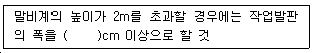
- 10
- 20
- 30
- 40
(정답률: 57%)
87. 강관비계의 구조에서 비계기둥 간의 최대허용 적재하중으로 옳은 것은?
- 500kg
- 400kg
- 300kg
- 200kg
(정답률: 61%)
88. 다음 중 통로 발판의 설치 기준으로 옳지 않은 것은?
- 작업발판의 최대폭은 1.2m 이내이어야 한다.
- 발판 1개에 대한 지지물은 2개 이상이어야 한다.
- 발판을 겹쳐 이음하는 경우 장선 위에서 이음을 하고 겹침길이는 20cm 이상으로 하여야 한다.
- 작업발판 위에는 돌출된 못, 옹이, 철선 등이 없어야 한다.
(정답률: 46%)
89. 해체 공사시 안전사항 준수내용으로 옳지 않은 것은?
- 사용기계기구 등을 인양하거나 내릴 때에는 와이어로프로 묶어서 작업한다.
- 적정한 위치에 대피소를 설치하여야 한다.
- 전도작업을 수행할 때는 작업자 이외의 다른 작업자를 대피시킨 후 전도시키도록 한다.
- 강풍, 폭우, 폭설 등 악천후 시에는 작업을 중지한다.
(정답률: 55%)
90. 포화도 80%, 함수비 28%, 흙 입자의 비중 2.7일 때 공극비를 구하면?
- 0.940
- 0.945
- 0.950
- 0.955
(정답률: 53%)
91. 양중기계의 와이어로프에 대한 설명 중 옳은 것은?
- 와이어로프의 안전계수는 근로자가 탑승하는 경우 그렇지 않은 경우보다 더 높아야 한다.
- 이음매가 있는 와이어로프가 이음매가 없는 와이어로프에 비해 많이 이용된다.
- 와이어로프의 절단은 기계적 방법을 피하고 가스 용단에 의해서만 절단한다.
- 지름의 감소가 공칭지름의 10%인 와이어로프도 사용 가능하다.
(정답률: 51%)
92. 하수종말처리시설 신축공사 현장에서 층고 5.4m인 배수펌프장 상부슬래브를 타설하는 과정에서 붕괴사고가 발생했다. 다음 중 붕괴의 원인으로 볼 수 없는 것은?
- 동바리로 사용하는 파이프서포트를 4본으로 이어 사용하였다.
- 수평연결재를 높이 1.5m 마다 견고하게 설치하였다.
- 조립도를 작성하지 않고 목수의 경험에 의해 지보공을 설치하였다.
- 콘크리트를 한 곳에 집중적으로 타설하였다.
(정답률: 44%)
93. 콘크리트의 유동성과 묽기를 시험하는 방법은?
- 다짐시험
- 슬럼프시험
- 압축강도시험
- 평판시험
(정답률: 61%)
94. 근로자가 상시 통행하는 작업통로에서 조명시설의 조도는 최소 얼마 이상인가?
- 25 Lux
- 50 Lux
- 75 Lux
- 100 Lux
(정답률: 72%)
95. 다음 중 채석작업을 하는 때에 해체계획서 작성시 포함 할 사항으로 옳지 않은 것은?
- 굴착면의 높이와 기울기
- 기둥침하의 유무 및 상태 확인
- 암석의 분할방법
- 표토 또는 용수의 처리방법
(정답률: 28%)
96. 다음 중 해체작업을 하는 때에 해체계획서 작성시 포함 할 사항으로 옳지 않은 것은?
- 사업장내 연락 방법
- 해체물의 처분계획
- 해체의 방법 및 해체 순서도면
- 발파 방법
(정답률: 36%)
97. 다음 중 사다리식 통로를 설치하는 때에 준수하여야 하는 사항으로 옳지 않은 것은?
- 발판과 벽과의 사이는 15cm 이하의 간격을 유지할 것
- 사다리가 넘어지거나 미끄러지는 것을 방지하기 위한 조치를 할 것
- 사다리의 상단은 걸쳐놓은 지점으로부터 60cm 이상 올라가도록 할 것
- 사다리식 통로의 길이가 10m 이상인 때에는 5m 이내마다 계단참을 설치할 것
(정답률: 31%)
98. 붕괴 등의 방지를 위하여 터널지보공을 설치한 후에 수시로 점검하여야 할 사항으로 가장 거리가 먼 것은?
- 부재의 손상, 변형, 부식, 변위, 탈락의 유무
- 통신설비의 상태
- 부재의 접속부 및 교차부의 상태
- 기둥의 침하 유무 및 상태
(정답률: 66%)
99. 다음 중 시멘트 창고에서 시멘트 포대의 올려 쌓기의 가장 적절한 양은?
- 20 포대 이하
- 17 포대 이하
- 15 포대 이하
- 13 포대 이하
(정답률: 61%)
100. 차량계 하역운반기계에 단위화물의 무게가 100kg 이상인 화물을 싣는 작업을 할 때 작업의 지휘자를 지정하여 준수하도록 하여야 하는 사항으로 옳지 않은 것은?
- 작업순서 및 그 순서마다의 작업방법을 정하고 작업을 지휘할 것
- 기구 및 공구를 점검하고 불량품을 제거할 것
- 해당 작업을 행하는 장소에는 출입제한을 두지 않을 것
- 로프를 풀거나 덮개를 벗기는 작업을 행하는 때에는 적재함의 화물이 낙하할 위험이 없음을 확인한 후에해당 작업을 하도록 할 것
(정답률: 63%)
1년 동안 근로자가 근무하는 일수 = 300일
100명의 근로자가 근무하는 일수 = 300일 x 100명 = 30,000일
8명이 부상당하여 휴업한 일수 = 219일
따라서, 총근로손실일수 = 8명 x 219일 = 1,752일
강도율은 다음과 같이 계산할 수 있다.
1년 동안 근로자가 근무하는 시간 = 8시간 x 300일 = 2,400시간
100명의 근로자가 근무하는 시간 = 2,400시간 x 100명 = 240,000시간
8명이 부상당하여 근로를 포기한 시간 = 219일 x 8시간 = 1,752시간
따라서, 강도율 = 1,752시간 / 240,000시간 = 0.75
따라서, 정답은 "총근로손실일수 : 180일, 강도율 : 0.75" 이다.